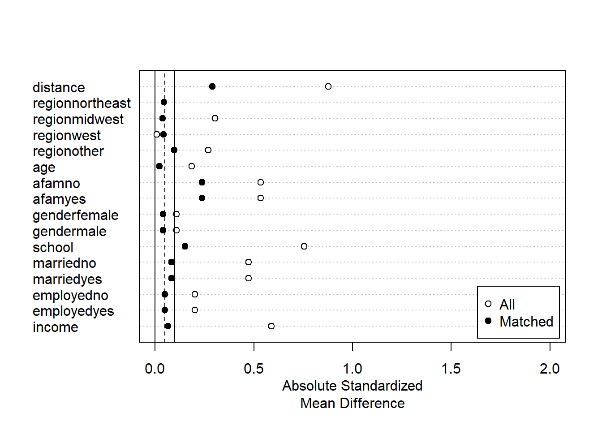

Chapter 7 条件付き平均効果関数の推定
library(tidyverse)
data("NMES1988",
package = "AER")
raw <- na.omit(NMES1988)
raw <- mutate(raw,
no_insurance = if_else(insurance == "no",1, 0))
Y <- raw$visits
D <- raw$no_insurance
X <- model.matrix(~ - 1+ region + age + afam + gender + school,
raw)
set.seed(123)7.1 Casual Forest
library(grf)
fit <- regression_forest(X = X,
Y = Y)
Y.hat <- predict(fit)$predictions
fit <- regression_forest(X = X,
Y = D)
D.hat <- predict(fit)$predictions
fit.CF <- causal_forest(X = X,
W = D,
Y = Y,
Y.hat = Y.hat,
W.hat = D.hat)
df <- mutate(raw,
tau.grf = predict(fit.CF)$predictions)7.2 Distribution of predicted individual effects
ggplot(df,
aes(x = tau.grf)
) +
geom_histogram()
7.3 Best linear predictors
best_linear_projection(fit.CF,X)##
## Best linear projection of the conditional average treatment effect.
## Confidence intervals are cluster- and heteroskedasticity-robust (HC3):
##
## Estimate Std. Error t value Pr(>|t|)
## (Intercept) -0.878656 3.080563 -0.2852 0.77548
## regionnortheast -1.833887 0.771118 -2.3782 0.01744 *
## regionmidwest -1.143741 0.707519 -1.6166 0.10605
## regionwest -0.058262 0.850668 -0.0685 0.94540
## age 0.158464 0.378459 0.4187 0.67545
## afamyes 0.330666 0.759248 0.4355 0.66321
## gendermale -0.246440 0.554706 -0.4443 0.65687
## school -0.083785 0.075749 -1.1061 0.26875
## ---
## Signif. codes: 0 '***' 0.001 '**' 0.01 '*' 0.05 '.' 0.1 ' ' 17.4 Tree presentation
library(rpart)
library(rpart.plot)
fit <- rpart(tau.grf ~ region + age + afam + gender + school + medicaid,
df,
control = rpart.control(cp = 0,
maxdepth = 2)
)
rpart.plot(fit)